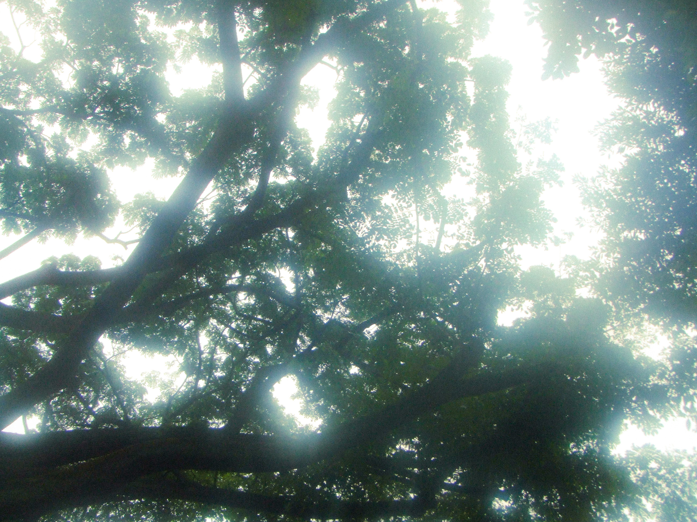
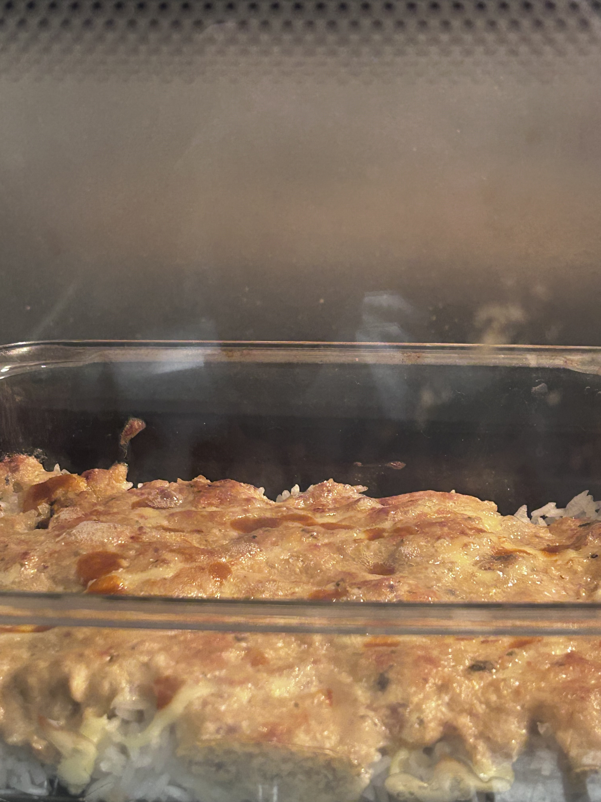
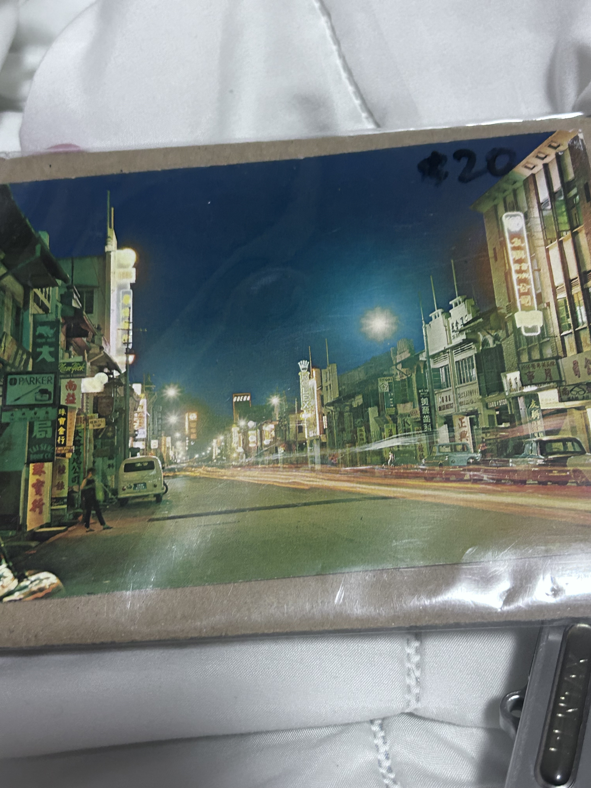
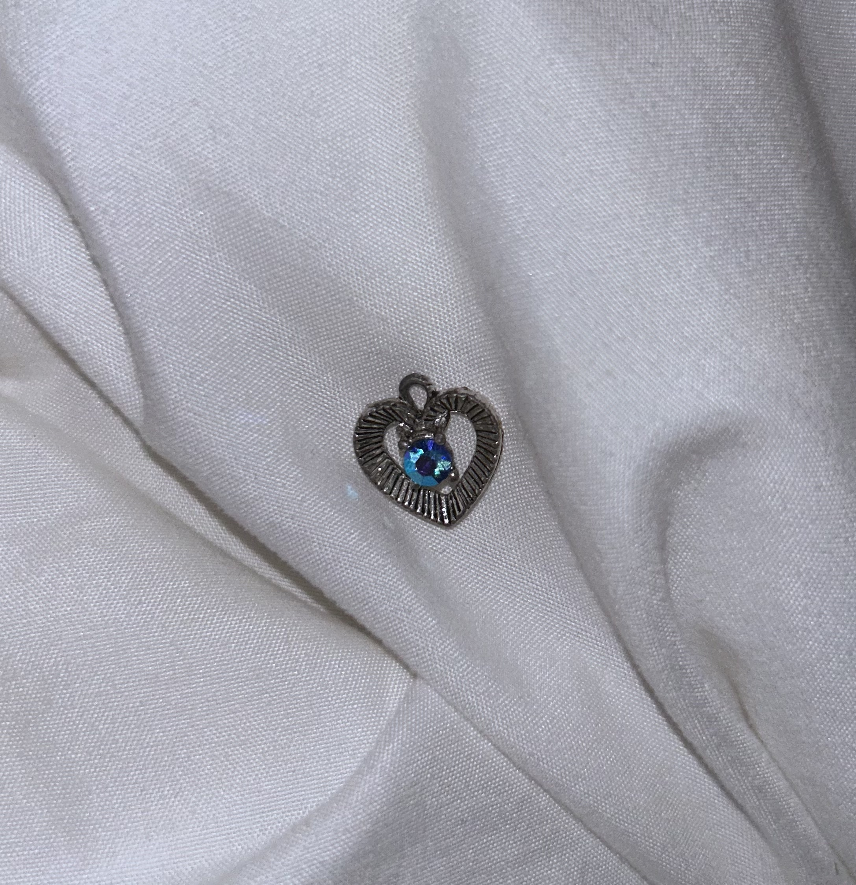
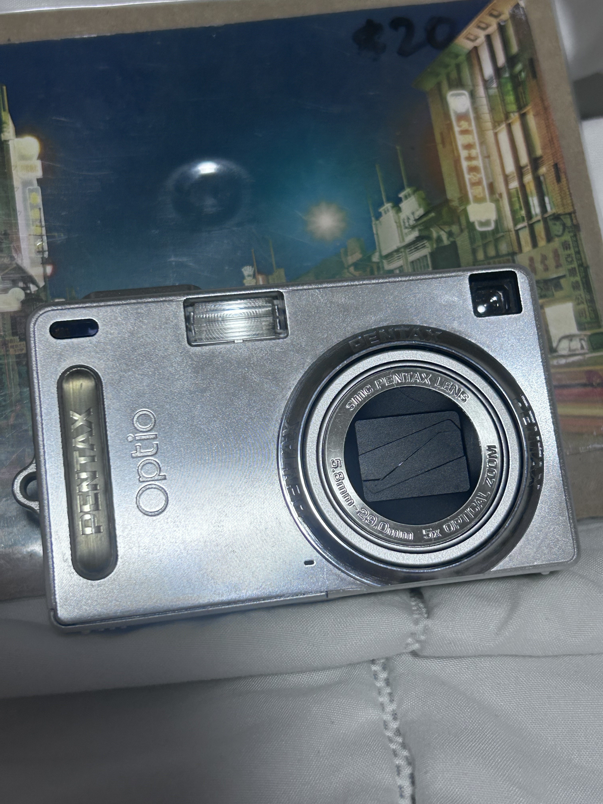
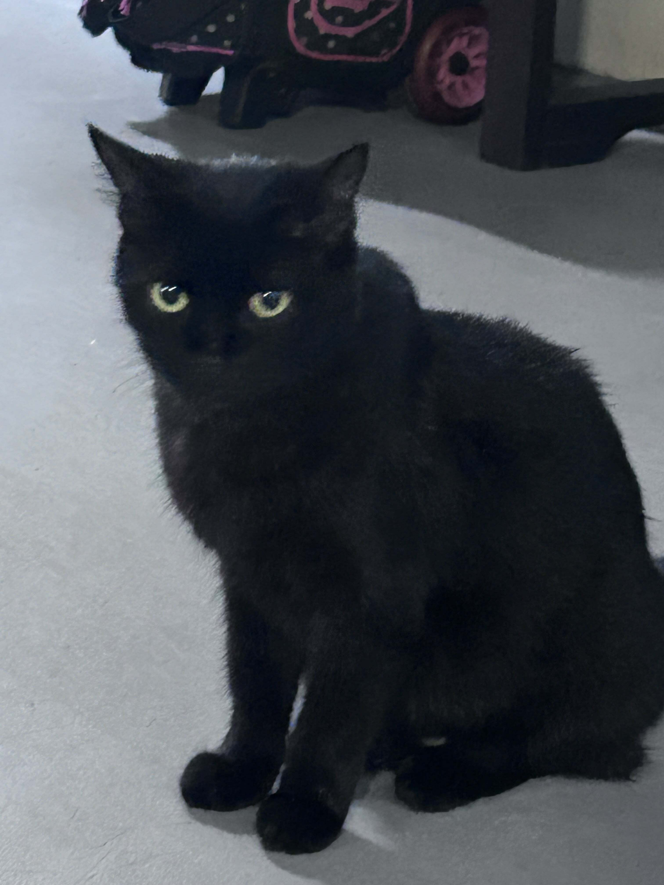

i feel like i give off the totally opposite impression of who i really am online. i think i come off as someone who is
full of love, all while being someone who is actually severely lacking in it. ironically, despite my name, i think many
people would call me a monster. my given name, “angel”, is not a fake nickname or something i came up with, so it may
have given off the impression that i think i am truly an “angel” that radiates hope and light, or it is some sort of
persona. but it is merely just a name. the only thing i have in common with what we think of when we hear about “angels”
is maybe that we all have no family, and spend our lives in solitude.
i remember seeing one of my mutuals tweet (although maybe it has nothing to do with me), “what makes you think you have
the right to call yourself an angel?” or something along those lines. the mutual was a foreign account, so maybe they
didn’t know it could also be a name in english. either way, they had a point. i don’t really deserve my name.
awhile ago i was watching the movie Wings of Desire (1987), it’s a movie about angels. i didn’t finish it (i plan to),
but i remember thinking how that is simply the perfect existence to me. being invisible, and helping people through
mysterious ways that they’ll never know about. watching people. observing. of course, it wouldn’t all be to my benefit.
that’s selfish and evil. i’d have to witness suffering too. but i will suffer along with them. with all of my heart, i
am hoping that i can become such an existence after i am long gone from this earth.
as a kid, people would always ask, who do you love most in your life? and most people would reply with their parents as
number one, or, if you wanted to be different, maybe you’d say you loved yourself most, and then your parents. for me,
my friends were always of higher priority than my family and myself, no question. you could say i considered them my
real family.
i used to fantasise about being an orphan. then about other worlds in which “family” simply does not exist. whose blood
you were comprised of, didn’t matter at all. we were all separated from our parents at birth, and put into an orphanage.
you chose your family and found your own people. i told this to someone, and i think they said it was dystopian, but to
me, it was utopia. it is very ignorant of me to think that way but i can’t change it. in one of my classes last year, my
professor asked me, what i thought constitutes as a family. to me, family is just all in your head!
⟡ 27 Jan 2:57 ⟡
I wanted to write a log summarising my 2024! It’s already almost February but I figured I should write while I have the chance, since I’m on a short break.
I’m not sure if I had ever been as depressed or borderline suicidal as I was in Sept–Nov 2023, and I decided to seek professional help in January 2024. I have always been very adverse towards and skeptical of therapy, it was really a last resort sort of thing. Unfortunately, my experience has only confirmed my beliefs that therapy would never work for me. In fact, I’d go so far to say it made it even worse temporarily, because I had to dredge up all the horrible, repressed memories that should’ve stayed repressed and never thought about again. I genuinely believe this – that forgetting is the only remedy to suffering.
You can’t undo what’s been done to you, or what you’ve had the misfortune of experiencing. I really think I would’ve spiralled if I had continued therapy, because I can’t bear to remember. Worst of all, now there is someone out there who has seen my face, seen me cry (ugh….) and has had to witness my trauma dumping all in the span of the first 2 hours of meeting me. She seemed speechless, which only made me feel even worse. But it’s alright, because I know I can count on her to forget. I count on the 2 other people I’ve trusted enough to tell some of my past to forget too. At least one of them definitely has forgotten by now. It brings me so much comfort, the idea of being forgotten… I wonder, why does anyone want to be remembered?
My memory has never been particularly amazing, but I remember many, many moments from my childhood, in detail, since my earliest memory from 2/3 years old. I heard of people completely blanking out traumatic memories, and I was always so envious of them. Those memories have not gotten a single bit hazier with the years gone by. Of course, I have a couple happy moments that I remember in great detail too. But they’re very brief, lasting about 3 seconds or less each.
But then, in April, I went to the sea by myself and sat on the rocks. It’s where I realised how beautiful trees were, for the first time…

In the same month, I went to go see the flowers. It was such a tiring adventure, I really thought I wouldn’t make it at some point, but when I finally made it there it all seemed worth it. I can still feel the cold breeze and hear the noise of the waterfall looking at the images. It’s interesting how simple experiences like that can etch into your mind so permanently.
Skipping ahead to November, I attended the concert of one of my longtime favourite artists! I really dislike crowds and screaming, so I’m really picky with what events I choose to go to. This was my first ever concert! I cried a LOT, even to songs I have never cried to before, just 15 minutes into the show, because I was so overwhelmed with emotion. And when it came to the songs I actually cry to just listening on my own… well…. let’s just say I’m glad I wasn’t in the first row. I know everybody says it, but it’s really surreal, looking at someone you’ve only seen through a screen, in real life. Like wow, he exists!? And he made this music that had a real, huge impact on me. I was only a few rows away from the stage, but none of my pictures or videos came out clearly because of the darkness. But I could see him quite clearly with my own eyes.
I don’t think you can see the audience super clearly from the stage because of all the lights, but I feel like he made eye contact at one point and smiled comfortingly while I was crying really hard. It doesn’t help that I was definitely the only person close to the stage bawling my eyes out… But I am probably being delusional. 😸
I still cry watching the videos back, I think this was the one moment where I truly felt grateful to be alive. And every time I rewatch the videos I took I feel that same sentiment again. Isn’t it crazy how someone could possess so much talent, brilliance, and most importantly love, that it materialises into real hope to someone?
Towards New Years’ Eve, I got a bunch of casual, nice interactions with strangers that made me feel happy. In a way, 2024 was one of the better years in my life thus far! It will be hard for 2025 to top it, but I’ll try my best. I am wishing you the best too. Thank you for reading.
˚࿔ 24 Feb 20:41 ⋆˚࿔
Today I am attempting to make SUSHI BAKE! 🍣 After months and months of being cripplingly addicted to cooking Youtube shorts I have finally decided to try a recipe…… and I thought this looked simple enough.
I was regretting my decision really hard when I was in the supermarket buying ingredients because it was SO heavy, mainly because of the sauces and the sesame oil. My right arm was clinging onto my body for its life and I was really scared of the bag breaking and having to pick up all my stuff infront of everybody, but thankfully it didn’t break. I also bought some backup dinner from the supermarket in case this doesn’t turn out edible. 😸 I was thinking of just getting out of there when I realised everything was too heavy, but I had already spent so long to find most of the ingredients (I do not frequent the supermarket… almost ever) so I decided to just bear with it. The cost of everything was enough to make me regret again though…
Right now I’m waiting for the rice cooker to finish cooking my rice, and I’m staring at the salmon… concoction that I’ve put together. It smells like cat food, and I think I was supposed to throw away the juice, but I didn’t, and now it’s all gooey and looks nothing like the Youtube short I’m referencing. I honestly started losing my appetite while I was mixing all the stuff together. Oh well…… I really hope this turns out good…
Because of that ordeal I put myself through, I actually didn’t go to study after class today, breaking my routine. But, something lucky happened to me as a result! I was visiting all the neighbourhood kitties as usual, and this guy (maybe my age or younger) came up to me and said, “Hello, you feed the cats regularly right?” To which I answered no, because not… really? Either way, he asked me to wait while he went back to his house and then gave me a free packet of wet cat food because apparently he bought it on accident.
Looks like the ginger cat will be getting a free meal soon!🐱🥧
20:55
Well, I don’t know how to work the rice cooker so it didn’t cook even after 25 minutes. I’m using the stove now.
21:12
I finally put it in the oven! I didn’t preheat the oven though so I’m just going to watch and take it out when it turns golden brown.

21:27
It’s done!!! :D The design is modern art. Honestly it tastes pretty good for my standards, but then again salmon is my favourite food so it’d be hard to ruin it… It’s so hot though and I somehow almost got burnt even while using mittens and a table cloth for extra protection. I really hate getting near anything hot, so I don’t like cooking and especially baking. I don’t know if I’ll be doing this again…
It’s a little too salty. Overall, I’d consider this a success because it was edible! ⭐️ I ended up deciding not to attach a photo of the final result because... it didn't look very appetising.
25 Feb 22:14
I am in a slightly gloomier mood today, for no reason really. For class we had to do some group work, but of course because I joined as the last member of a friend group, it is always really awkward and I mainly just sit there and do what I’m asked to do. Of course, we needed some communication, but they didn’t speak to me, except for the guy next to me who said “Hello” when I arrived to class. He immediately moved his seat when we had to start the work (because we had to communicate with the others) and I sat there blankly for a long time. I finally plucked up the courage to ask him some things. We exchanged a couple sentences about the work, and I asked if I could leave when I was done. He also asked if I was okay while he was going to the bathroom. Then he asked if I was going home, and was the only person who said goodbye to me.
7 Mar 12:20
I was watching a Youtube video where they read and discussed Reddit stories about relationships. Ironically, while I was halfway through the video they began fighting again. This is so reminiscent of my childhood, just like the old days… I truly wonder how it is even possible that after all these decades of being together, they are just so irreconcilably insufferable to each other, and neither has begun to wear the other down. They have definitely worn me down.
So much so that I almost lost track of what my lifelong goal has always been, which is to escape from here. Is it usually this hard to escape for most people? I wonder if I will actually end up escaping…? I hate to think about the future.
I’m really scared of losing track of what I have always wanted in life and ‘betraying’ younger me; in that video I was watching, the narrator of one post talked about how she “changed” from when she was younger. She was, unsurprisingly, not okay with cheating when she was younger, but now that she’s started a family, she thinks it’s fine to move on and pretend it never happened. It’s scary, isn’t it, how as you grow older your younger self’s convictions and dreams (maybe even your virtues?) grow blurrier and blurrier until you become someone else? I don’t want to become someone I’d be so deeply ashamed of because I chose to cope with harsh realities instead of doing something about it..
Anyway, I think I’ll go to a antique flea market on Saturday, because a huge event is happening where a lot of vendors will be selling their stuff there. I know I’ll reeeaally hate the crowd but I’m also really interested in the stuff that’s gonna be there, like STAMPS… or vinyl records or other useless things that will collect dust in my room… I cannot wait to collect more STAMPS from all over the world!!! It’s a bit of a long journey but I hope it will be worth the trip…
I will make sure to share my newly acquired possessions ᕙ( •̀ ᗜ •́ )ᕗ
8 Mar 20:05
So……. there weren’t any stamps….. and the place was much smaller than I thought.
I ended up getting another digital camera, a beautiful postcard and a charm. These days, vintage stuff are so expensive, maybe because it’s a trend or something, but the postcard was $20… it was the nicest one there but still…. There were cool bank notes too but they were also $20…

And I’m pretty sure I got scammed for the charm because they kind of decided the price when I asked, and asked for $10 when the rest were like $6, and this was the smallest charm…. I’m pretty sure I always get scammed because they think I’m just a kid, it’s kind of annoying sometimes… I did kind of feel like I found a ‘hidden gem’ though, so I didn’t want to let it go. It’s such a pretty shade of blue, and if I can clean the silver up it might look really nice? It's very small, about the size of my finger.

The guy at the camera booth was really sweet and helpful though, but I always hate how awkward it is because really I want to try all of the cameras but that’s… too much.. so I just tried a few and settled on one. A PentaX Optio SVi, also released in 2005 like my first digital camera, a Fujifilm.

I’m really bummed about the stamps though. What do I have to do to get some stamps…
Anyway, I plan on starting… scrapbooking? journalling? with physical items like receipts or other kinds of memorabilia, I think it could be fun. I threw away all of my stuff from childhood because I saw no value in them, or maybe I wanted to get rid of the memories, but I find myself wanting to live more meaningfully these days, even if I don't end up keeping them in the end or passing them on to anyone. I also made a new friend on my way home! Black cats are the best 🐾🐈⬛

14 Mar 02:10
Another school week has passed. Today, I discovered a cute little store selling Korean and Korean-English books, as well as coffee and tea. I know I shouldn't have, but I bought a small bottle of milk from the convenience storebecause I was hungry, and I brought it in with me.
With only one other customer in the store that left pretty quickly, it was awkward, but I tried my best to distract myself looking around. I quickly found a Korean picture book of Le Petit Prince, the kind that has cool 3D pop-ups within each page. It was so beautiful, I really wanted it, but it didn't have a price tag... It was a hardcover and kind of big, so it was probably expensive.
Of course, everything was also in Korean, but that's what the camera function in the Google Translate app is for! I've never read Le Petit Prince before, but it seems well-loved by many.
The owner was a sweet lady probably in her 30s to 40s, who kindly came up to me and told me that I had to finish my drink before browsing the books (obviously). She had the sweetest smile, and a heavy Korean accent. It was certainly the nicest way I've ever been 'kicked out'. Sadly, the milk did not have a bottle cap and it was still pretty full, and I had to go back to class in 5 minutes anyway, so I just left the place. I might visit again next week when I wander outside aimlessly during the break again.. and show you the lovely picture book.
Some people are touch-starved, but I don't like to be touched. Instead, I am conversation-starved. In class, one of my group members asked if I lived here my whole life, because apparently I have a slight American accent. I really thought I'd gotten rid of it by now, but I guess not. I used to only watch American TV shows and cartoons when I was younger, and couldn't understand anyone who spoke English without that specific accent, I vividly remember being unable to understand my peers when they spoke to me. It was pretty bad. I told him this and he said that's probably why. I appreciated this interaction..
This marks one month since I've last spoken to a friend I've had for around 5 years now. I noticed the speed of her replies go from minutes to hours to days though she was online. She was never one to initiate or text first or ask to meet up, and recently she's made a bunch of online friends within a certain community, so I guess it adds up. We barely have any shared interests, but I thought we understood each other and cared for each other, and that that was enough. She posted about me one time after I'd gifted her something for her birthday, and in the replies she said she'd "treasure" me "for life". At that time I thought I was very touched, but I think I understand now that the post was never for me at all but rather more for herself.
Usually, I cave and check in with her because I miss her. But when I last read our message logs I felt so pathetic, so I didn't end up checking in this time.
Maybe it may seem like I'm overreacting, there are people who talk to their friends once a month or on a sparser frequency and still consider them as friends. But so much happens in merely a day. All the things you did. All the things you saw, in real life or through a screen. All the different strangers you encountered. All the various feelings you felt. All the things you thought about. All the songs you listened to. Humans don't change much if you share memories with them regularly but a big gap of memories unshared is like not syncing your data. Plus, old data is slowly being erased, thanks to the passage of time and its effects on our brains...
I'm not sure what to do about this. Maybe I'll end up being the one to check in again after all. After becoming kind of friend-less, I started to wonder if this is why people try so hard and struggle just to make a friend in a new environment. Real connections are more important than whether or not I'm alone. Maybe no one has ever felt connected to me.
What does it mean to be "close" to someone? Or to be a friend to someone? Does it mean knowing each other's past? Is it talking regularly? Is it wanting to share and make memories with them? Is it knowing for sure that they'll be in your future? I wonder if even 2 or 3 years from now, will you and I still know each other?
I detest this feeling of unrequited platonic love...